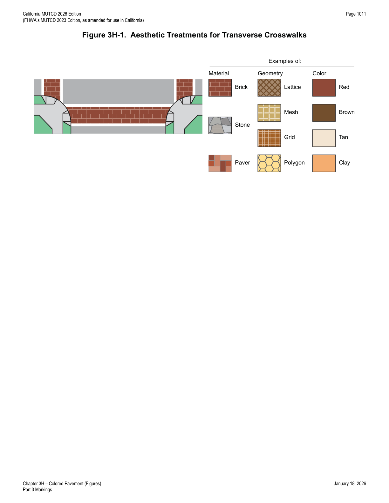
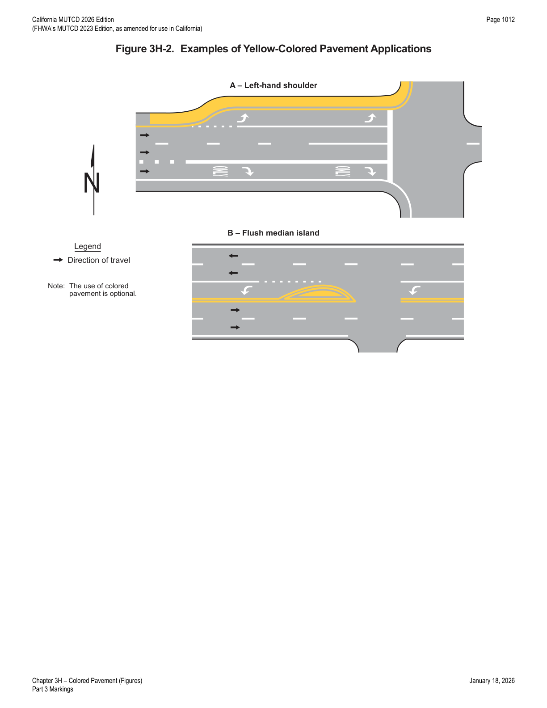
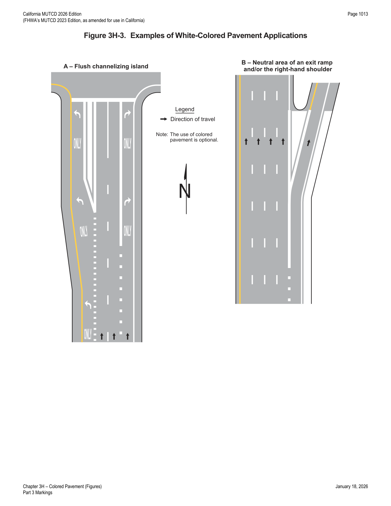
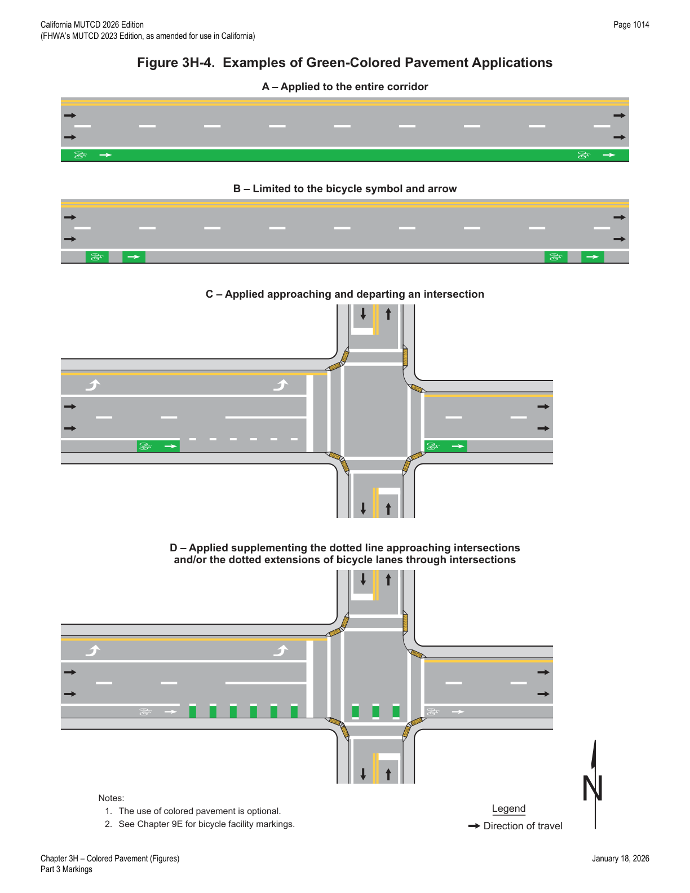
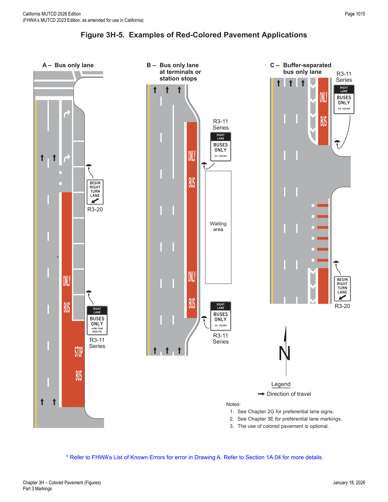
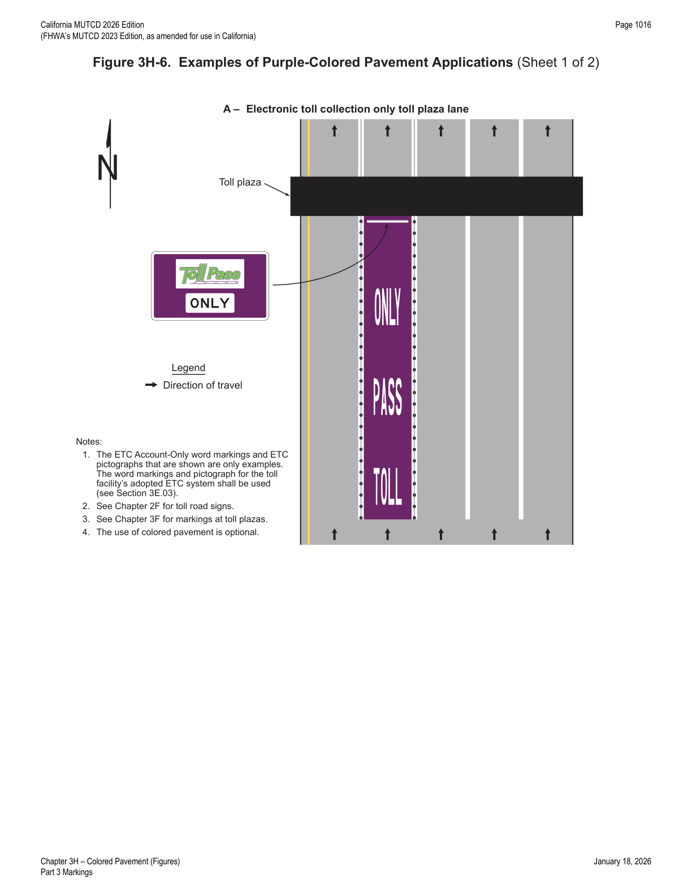
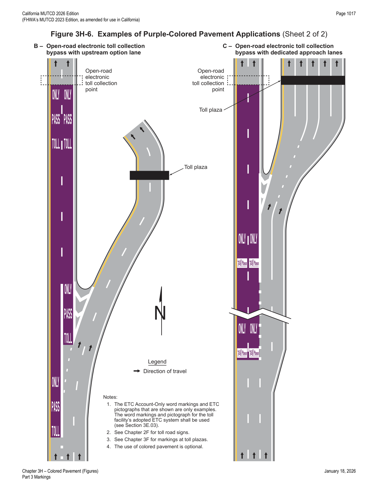

Part 3 · Markings · Chapter 3H
Colored Pavement
Rules distinguishing purely aesthetic surface treatments from colored pavement used as a traffic control device, and the specific, color-coded applications for yellow, white, green, red, and purple colored pavement.
3H.01Standardization of Application
- 01Colored pavements consist of differently-colored road paving materials, such as colored asphalt or concrete. Other surface treatments can be applied to the surface of a road, island, or area outside the traveled way to simulate a colored pavement.
- 02If non-retroreflective colored pavement is used as a purely aesthetic surface treatment (see Section 3H.03) within the provisions of this Chapter and is not intended to communicate regulations, warnings, guidance, or other information to road users, the colored pavement is not considered to be a traffic control device, even if it is located between the lines of a crosswalk.
- 03If colored pavement is used within the traveled way, on flush or raised islands, or on shoulders to communicate regulations, warnings, guidance, or other information to road users, or if retroreflectivity is used, the colored pavement shall be considered a traffic control device and shall be limited to the colors and applications specified in this Chapter.
- 04Except as provided in Paragraph 5 of Section 3H.07, colored pavement shall only be used if the corresponding regulations, warnings, or guidance are applicable at all times.
- 05Colored pavements used as traffic control devices should only be used where the colored pavement contrasts significantly with adjoining paved areas.
- 06The chromaticity coordinates that define the ranges of acceptable colors for traffic control devices are found in the Appendix to Subpart F of 23 CFR 655.
- 07If used, colored pavement shall only be used to supplement other markings as provided in this Manual.
- 08Longitudinal pavement markings, crosswalks, pavement marking symbols, and elongated route markers are not considered colored pavements.
3H.02Materials
- 01Colored pavements may be either retroreflective or non-retroreflective, in accordance with the provisions of this Chapter for specific applications.
- 02If surface treatments are applied to the surface of a road, island, or other area outside the traveled way to simulate a colored pavement, pavement marking materials should be selected that will minimize loss of traction for road users (see Paragraph 2 of Section 3A.02).
- 03Providing for retroreflectivity, such as incorporating glass beads, can affect the skid resistance of pavement markings.
- 04Installation of colored pavement to one lane or an area or portion of a multi-lane traveled way can create differentials in skid resistance values between the areas of colored pavement and non-colored pavement that might be unexpected by the road user.
3H.03Aesthetic Surface Treatments
- 01Aesthetic surface treatments are sometimes used between the transverse lines within a crosswalk, in islands, in medians, in shoulders, within sidewalk extensions designated by pavement markings, or in other areas outside of the traveled way.
- 02Common examples of materials used as aesthetic surface treatments include brick, paving bricks, paving stones, or other materials designed to simulate such paving. Some examples of geometries for aesthetic surface treatments include honeycomb, lattice, mesh, grid, and regular polygon patterns.
- 03Surfaces with individual units laid out of plane and those that are heavily-textured, rough, or chamfered, could increase rolling resistance and subject pedestrians who use wheelchairs to the effects of vibration; it is desirable to minimize surface discontinuities.
- 04Common examples of colors for aesthetic surface treatments incorporated into the material or geometry are brick red, rust, brown, burgundy, clay, tan, or similar earth-tone equivalents (see Figure 3H-1).
- 05Aesthetic surface treatments shall not interfere with traffic control devices.
- 06Aesthetic surface treatments shall not be of a surface that can confuse pedestrians with vision disabilities that rely on tactile treatments or cues for navigation.
- 07Colors used for aesthetic surface treatments shall be outside the chromaticity coordinates that define the ranges of acceptable colors for traffic control devices.
- 08Patterns that constitute a purely aesthetic surface treatment shall be devoid of advertising and shall not contain elements of retroreflectivity.
- 09Patterns that constitute a purely aesthetic surface treatment for the interior area of a crosswalk shall not be designed to encourage road users to remain in the crosswalk, engage or interact with the pattern, or otherwise inhibit users from crossing the street in a safe and efficient manner.
- 10Aesthetic surface treatments should not use colors or patterns that degrade the contrast of markings used to delineate an area, or that might be mistaken by road users as a traffic control application.
- 11To provide contrast, a gap of at least one-half the width of the white transverse line used to establish the crosswalk, but not less than 6 inches, should be used between the white crosswalk lines and the aesthetic surface treatment, such as unmarked pavement or a black contrast line (see Section 3A.03).
- 12To provide contrast, a gap of at least the width of the longitudinal line used to establish the area should be used between the longitudinal line and the aesthetic surface treatment, such as unmarked pavement or a black contrast line (see Section 3A.03). If the longitudinal line is a double line, the gap should be at least the width of one of the lines that makes up the double line.
- 13Aesthetic surface treatments should not contain pictographs, illustrations, or symbols.
- 14Refer to FHWA's List of Known Errors for an error in the Paragraph 13 text. Refer to Section 1A.04 for more details.

In practice: the key distinction throughout this chapter is that aesthetic surface treatments (earth-tone colors, outside the chromaticity range for control devices, no retroreflectivity) are not regulated as traffic control devices, while any colored pavement communicating a regulation, warning, or guidance — or using retroreflectivity — is a traffic control device restricted to the specific colors and uses in Sections 3H.04-3H.08.
3H.04Yellow-Colored Pavement
- 01Yellow-colored pavement is used to enhance the conspicuity of areas separating traffic traveling in opposite directions of travel and the left-hand edge of the roadway.
- 02If used, yellow-colored pavement shall be limited to: (A) flush or raised median islands separating traffic flows in opposite directions, (B) left-hand shoulders of divided highways, and (C) left-hand shoulders of one-way streets or ramps.
- 03Yellow-colored pavement shall not be incorporated into elements of the roadway that function as reversible lanes or two-way left-turn lanes.
- 04Yellow-colored pavement shall not be used on channelizing islands where traffic travels in the same general direction on both sides.
- 05Yellow-colored pavement may be installed for the entire length of the roadway, island, or shoulder, or for only a portion or portions of the roadway, island, or shoulder.
- 06An example of an application of yellow-colored pavement is shown in Figure 3H-2.

3H.05White-Colored Pavement
- 01White-colored pavement is used to enhance the conspicuity of areas separating traffic traveling in the same direction of travel and the right-hand edge of the roadway.
- 02If used, white-colored pavement shall be limited to: (A) flush or raised channelizing islands where traffic passes on both sides in the same general direction, (B) right-hand shoulders, (C) exit gore areas, and (D) entrance gore areas.
- 03When used on right-hand shoulders, white-colored pavement should be limited to areas not intended for use by motor vehicle traffic except those shoulders designated for emergency use.
- 04White-colored pavement may be installed for the entire length of the roadway, island, or shoulder, or for only a portion or portions of the roadway, island, or shoulder.
- 05White-colored pavement may be used instead of chevron markings (see Sections 3B.13 and 3B.25) in neutral areas.
- 06An example of an application of white-colored pavement is shown in Figure 3H-3.

3H.06Green-Colored Pavement for Bicycle Facilities
- 01Green-colored pavement is used to enhance the conspicuity of locations where bicyclists are expected to operate, and areas where bicyclists and other traffic might have potentially conflicting, weaving, or crossing movements. Green-colored pavement is also used to enhance the conspicuity of word, symbol, and/or arrow pavement markings when these markings are used in certain bicycle facilities.
- 02If used, green-colored pavement shall be limited to: (A) bicycle lanes (see Sections 9E.01, 9E.06, 9E.07, and 9E.08), (B) extensions of bicycle lanes through intersections (see Section 9E.03), (C) extensions of bicycle lanes through areas where motor vehicles enter a mandatory turn lane in which motor vehicles must weave across bicyclists in bicycle lanes (see Section 9E.02), (D) two-stage bicycle turn boxes (see Section 9E.11), (E) Bicycle Boxes (see Section 9E.12), and (F) as a background for bicycle detector symbols (see Section 9E.15).
- 03Green-colored pavement shall not be: (A) incorporated into electric-vehicle parking stations or parking stalls, (B) incorporated into crosswalks (see Chapter 3C), (C) used as a background for shared-lane markings (see Section 9E.09), or (D) used instead of the required markings for bicycle facilities (see Chapter 9E).
- 04If used, the pattern of the green-colored pavement supplementing dotted extension lines shall match the pattern of the dotted lines, thus filling in only the areas that are directly between a pair of dotted line segments. If used, the pattern of the green-colored pavement supplementing a dotted longitudinal line, which defines a bicycle lane (see Paragraph 11 of Section 9E.02), shall match the pattern of the dotted line, thus filling in only the areas that are directly between a line segment and the curb, or, in the absence of a curb, the edge of the roadway.
- 05If green-colored pavement is used within separated bicycle lanes on an independent alignment, it should be used only at the entrances to those facilities from roadways open to public travel or at conflict, weaving, or crossing locations.
- 06If green-colored pavement is used within shared-use paths, it should be used only where pedestrian and bicyclist movements are separated and for only a portion (or portions) of the path designated for bicyclist use.
- 07Green-colored pavement may be installed for the entire length of a bicycle lane or bicycle lane extension or for only a portion (or portions) of the bicycle lane or bicycle lane extension.
- 08Green-colored pavement may be installed for the entire length of a physically-separated bikeway within the roadway or for only a portion (or portions) of the physically-separated bikeway within the roadway.
- 09Appropriate regulatory (see Chapter 9B) or guide signing (see Chapter 9D) should be installed to provide related information to the presence of the colored pavement.
- 10Examples of applications of green-colored pavement are shown in Figure 3H-4.

3H.07Red-Colored Pavement for Public Transit Systems
- 01Red-colored pavement is used to enhance the conspicuity of locations, station stops, or travel lanes in the roadway exclusively reserved for vehicles of public transit systems or multi-modal facilities where public transit is the primary mode. These public transit vehicles include buses, streetcars, trolleys, light-rail trains, and rapid transit fleets.
- 02Red-colored pavement may be used where engineering judgment determines that one or more of the following conditions are expected to result from its application: (A) increased travel speeds will be expected by the public transport vehicle after an exclusive lane or facility is provided, (B) reduced overall service time through the corridor will be expected by the public transport vehicle, (C) decreased rates of illegal parking or occupation of the transit or multi-mode lane or facility will be expected.
- 03If used, red-colored pavement shall be applied only in lanes, areas, or locations where general-purpose traffic is not allowed to use, queue, wait, idle, or otherwise occupy the lane, area, or location where red-colored pavement is used.
- 04Red-colored pavement shall be installed for the full width of the lane.
- 05Red-colored pavement may be used for full-time or part-time operations.
- 06Red-colored pavement may be installed for the entire length of a restricted lane or for only a portion (or portions) of the restricted lane.
- 07Red-colored pavement may be installed in a broken pattern where entrance into the transit lane is permitted by general traffic, for example where general traffic is allowed in a transit lane in advance of a turn.
- 07aRefer to FHWA's List of Known Errors for an error in the Paragraph 7 text. Refer to Section 1A.04 for more details.
- 08Regulatory signs (see Sections 2B.02 and 2G.03) shall be used to establish the allowable use of the lane, area, or location. Regulatory signs shall also be used when it is determined that other vehicles will be allowed to enter the lane to turn or bypass queues.
- 09If red-colored pavement is used on public transit facilities separated from the roadway or on facilities on an independent alignment, it should be used only at the entrances to those facilities from roadways open to public travel.
- 10Examples of applications of red-colored pavement are shown in Figure 3H-5.

3H.08Purple-Colored Pavement for Electronic Toll Collection (ETC) Account-Only Preferential Lanes
- 01Purple-colored pavement shall be limited to: (A) lanes on the approach to a toll plaza where the lane is restricted to use only with a registered ETC account; and (B) lanes or approaches to an open-road tolling (ORT) collection facility that bypasses the physical toll plaza, where the ORT facility is restricted for use only by vehicles with registered ETC accounts.
- 02Purple-colored pavement shall not be used in an approach lane that also facilitates additional payment methods downstream.
- 03If used approaching a physical toll plaza, purple-colored pavement shall be flanked by white solid longitudinal lines that establish the toll lane.
- 04If used on an ORT collection facility that bypasses the physical toll plaza, purple-colored pavement shall be flanked by appropriate edge lines, and if applicable in multi-lane bypasses, appropriate longitudinal solid or broken white lane lines.
- 05Purple-colored pavement may be installed for the entire length of a toll lane or ORT collection facility or for only a portion (or portions) of the toll lane or ORT collection facility.
- 06Figure 3H-6 illustrates examples of purple-colored pavement for use at toll plazas.


★ Key Takeaways — Chapter 3H
- Colored pavement is only a traffic control device (and thus restricted to this chapter's colors/uses) when it communicates a regulation, warning, or guidance, or uses retroreflectivity; purely aesthetic, non-retroreflective, earth-tone treatments outside the traffic-control chromaticity range are not regulated as devices, even inside a crosswalk.
- Five functional colors are defined, each limited to specific uses: yellow (median islands/left shoulders separating opposing traffic), white (channelizing islands/right shoulders/gore areas for same-direction traffic), green (bicycle lanes, extensions, turn boxes, bike boxes, detector backgrounds — never in crosswalks or as shared-lane-marking backgrounds), red (exclusive public-transit lanes, full lane width, paired with regulatory signs), and purple (ETC Account-Only toll lanes/ORT bypasses, flanked by white lines/edge lines).
- Aesthetic crosswalk treatments need a contrast gap from the white transverse lines of at least half the line's width (minimum 6 inches), and must not include pictographs, advertising, or retroreflective elements, or otherwise encourage lingering in the crosswalk.
- Red-colored pavement requires regulatory signage to establish the lane's allowable use and may be used full-time or part-time, including in a broken pattern where general traffic is permitted to merge in for a turn.